Rebuilding a ZF4HP22
Gearbox failure and 10 miles in reverse
I knew the gearbox was on it's way - the classic symptom of the 4HP22 failing is 'hanging in first gear when cold'. That means that the governor is getting clogged with debris from a clutch. The other symptom was rising engine revs with no increase in road speed. So I knew it was getting bad
The Landie was off the road, so I decided to finish the Landie before the van broke. This necessitated a trip to Northampton (I live in Huntingdon) to pick up the cylinder heads. Off I went. The slipping was getting worse & worse in Northampton, but I managed to get back as far as Thrapston. I decided that the best way was not on the dual carriageway, but I thought that maybe I could limp along the back roads, so I headed to Titchmarsh.
Titchmarsh was touch and go, and finally on the road towards Clopton all forward motion stopped. The engine revved, but the van would not budge.
Then I discovered that reverse gear was still good. So I set off in reverse.
I passed through Clopton, turning right for Old Weston. I whizzed along (with the traffic, just the van facing the wrong way), towards Old Weston, then turned left towards Alconbury. I reached Alconbury Weston, turned right and then left into Alconbury. Over the narrow bridge, turn left towards the Al. Under the A1, up the hill to the BP truckstop. Around the three roundabouts, and towards Little Stukeley. Nearly home now. Naturally the local constabulary turned up at this point and insisted that my joy ride should finish there!!!
By my calculations that's about 10 miles in reverse. Took me about 1 1/2 hours, and I was nearly home
Gearbox rebuild
There's very little info on the web regarding rebuilding automatic transmissions, and nothing on the ZF4HP22. I called Ashcroft Transmissions in Luton as they specialise in the Range Rover version of the 4HP22 (which is the same as this one apart from the output shaft), and got told that they weren't interested.
A nice place in London whose name I forget quoted �800 fitted which was OK
But I decided to rebuild it myself
I obtained 3 manuals, the Land Rover manual, the Jaguar manual and the ATSG manual. Between them they covered it
The man at ZF also put me in touch with JP Automatic Transmissions for spares; they were brilliant. When I had finished my stripdown and identified the spares, they shipped them immediately and I had them less than 24 hours later. Highly recommended.
The stripdown
The gearbox out of the vehicle
| 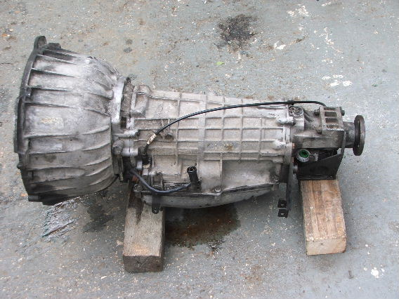 |
Remove the bolts to remove the bellhousing, but leave the pump in place.
| 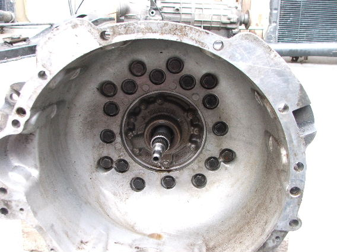 |
| 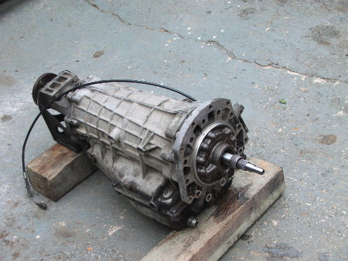 |
Then remove the tailcone (note the output flange comes off with the tailcone on this version - the car versions are different in this respect)
| 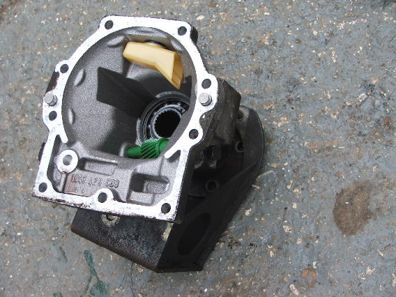 |
| 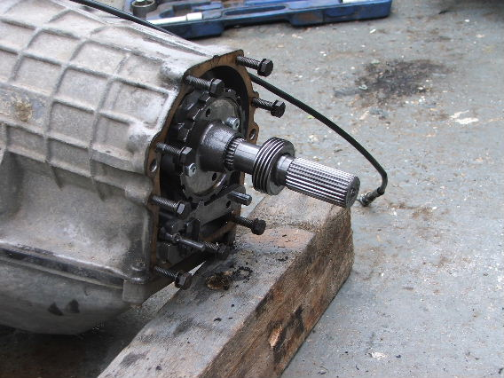 |
I knew the valve body was OK and that the fault was in the A clutch, so I removed the valve body and put it to one side. You need to remove the little rubber washers and springs (8 or 9 of them) in the fluid passages between the valve body and the gearsets otherwise you can't get the gearsets out.
| 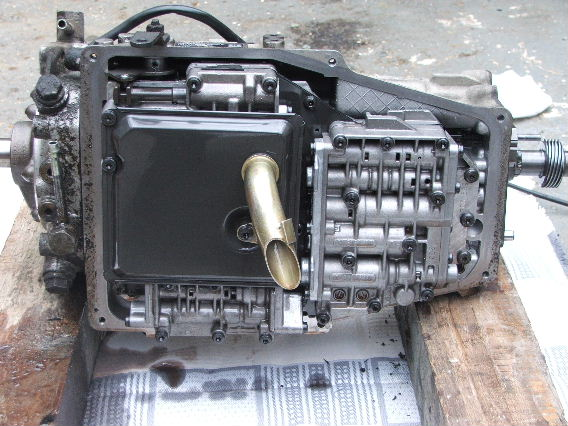 |
| 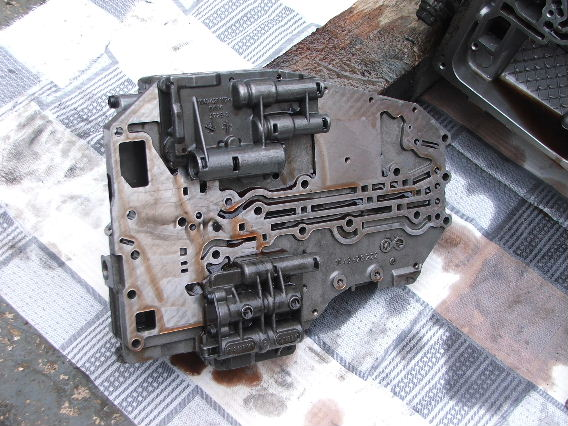 |
Then remove the rest of the bolts at the bellhousing end and take stuff out
| 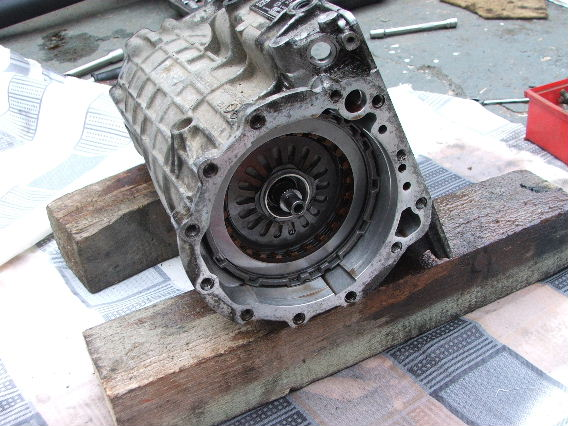 |
| 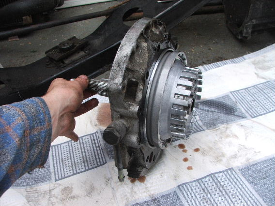 |
| 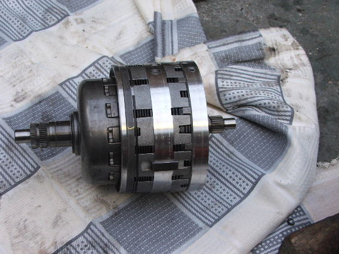 |
| 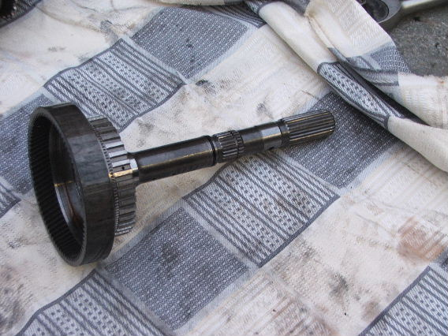 |
It's worth trying to keep everything in the right order as there's a lot of bits!
| 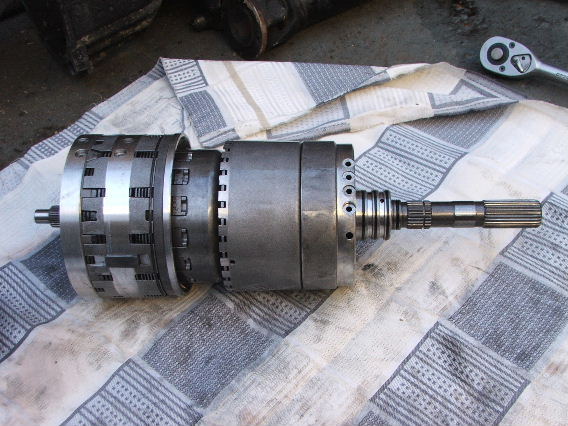 |
And you'll end up with the empty casting. Stick it in the dishwasher to get it nice and clean
| 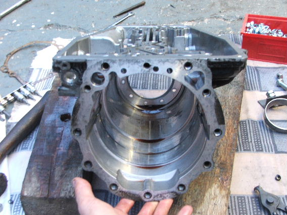 |
The offending clutch
| 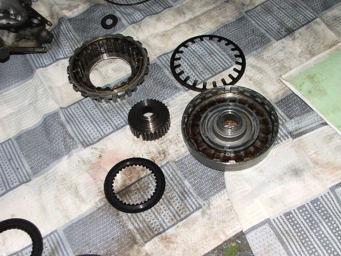 |
| 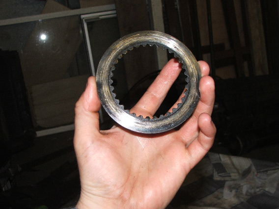 |
The new clutch
| 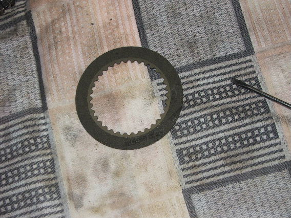 |
Reassembly
This is where Haynes say 'reassembly is the reverse of disassembly'
Reassembled 'A' clutch. Bit of guesswork with the shimming but it seems to be OK.
| 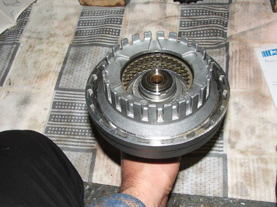 |
Then reassemble the gearsets into the casing starting with the output shaft.
| 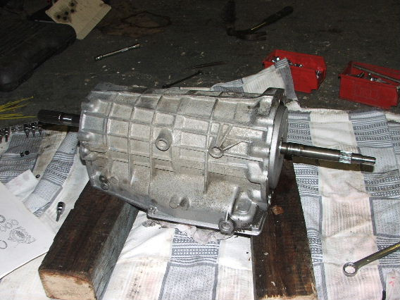 |
The pump.
| 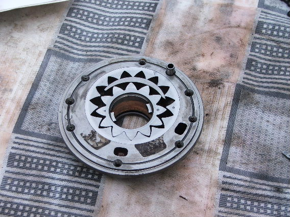 |
Measure the endfloat of the input shaft and shim the thrust bearing accordingly.
| 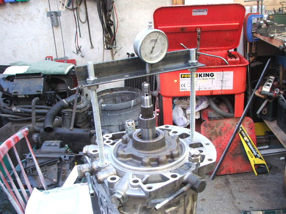 |
Bellhousing back on.
| 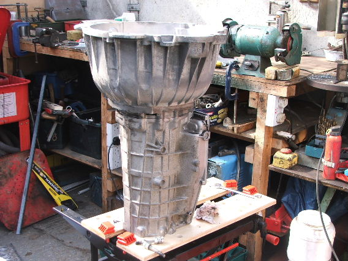 |
Selector back in.
| 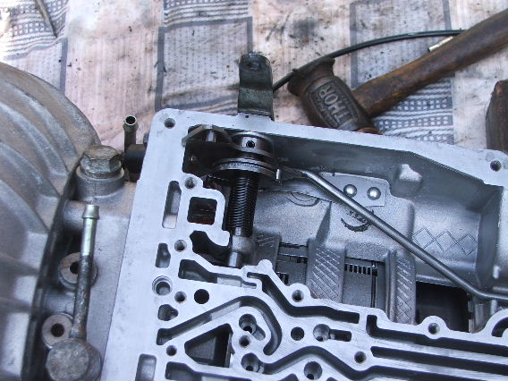 |
Valve body back on & new filter.
| 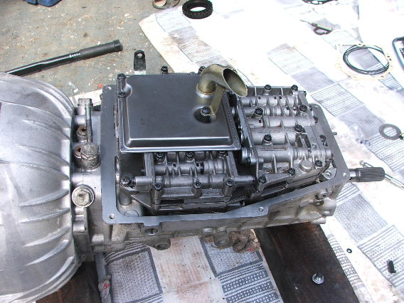 |
Governor & parking pawl.
| 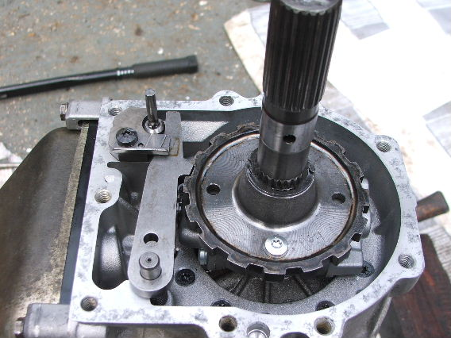 |
And finished.
| 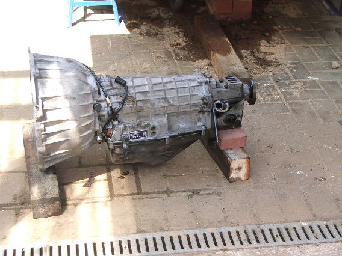 |
With a dry weight of nearly 80kg, I realised that I'd never lift it into the van by myself, so I made a cradle to give a good jacking surface, and eased it up on bricks & the jack.
| 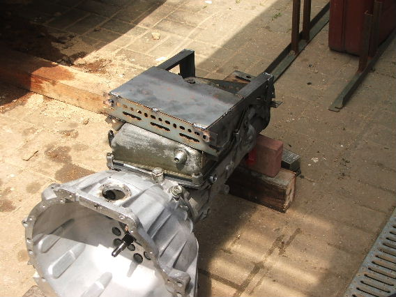 |
| 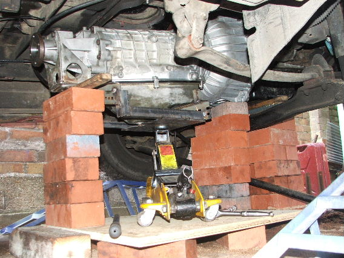 |
And did it work?
The governor didn't clear, so I had to change that, but it's easy to do with the gearbox in the vehicle and I had a spare. Apart from that, so far so good!
Volvo ZF
There are other versions of the ZF box for different vehicles. Here is an image of a Volvo 940 box
| 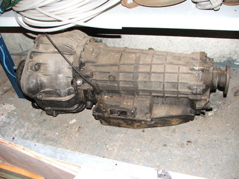 |
Key differences between this one and the Sherpa box are:
- Tailcone - the Volvo one doesn't have a speedo drive, and is much smaller (& weaker)
- Sump - Much smaller sump. The Sherpa one is shared with the Range Rover, which has to work at much more extreme angles than a normal car.
- Bellhousing is obviously different
- Also the shift points and max engine speed will be different.
As a point of reference, approx dimensions of this box are 20inches between output flange and the face onto which the bellhousing fits, and 26.5inches between bellhousing to engine face and output flange. Also note that I believe that bellhousings are interchangeable, but swapping between a 2WD and 4WD tailcone entails a complete rebuild!